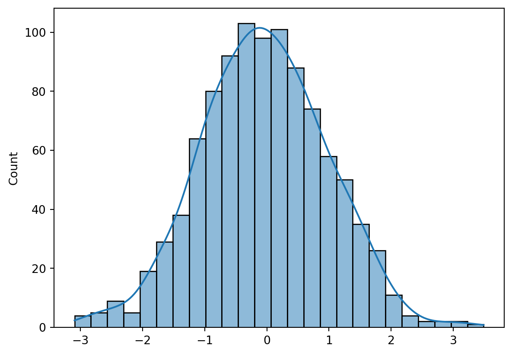

x = list(range(1, 11))
y = [i**2 for i in x]
y[1, 4, 9, 16, 25, 36, 49, 64, 81, 100]↠Back to the Programming Reading Guide 👨‍💻
↠Back to the Python Section 🐍
↠Back to the Programming Section 👨‍💻

Quarto allows the direct execution of Python code blocks in .qmd files, making it possible to create interactive and reproducible reports with analyses, plots, and visualizations in Python.
The snippet below is the YAML header of the .qmd document, which defines the title, author, date, output format, and code execution options:
---
title: "Python Code Templates for Use with Quarto"
author: "Blog do Marcellini"
date: 2025-06-23
format: html
editor: visual
lang: en
execute:
echo: true
warning: false
message: false
---x = list(range(1, 11))
y = [i**2 for i in x]
y[1, 4, 9, 16, 25, 36, 49, 64, 81, 100]import matplotlib.pyplot as plt
plt.plot(x, y, marker='o', color='blue')
plt.title("Plot of x²")
plt.xlabel("x")
plt.ylabel("y = x²")
plt.grid(True)
plt.show()import numpy as np
import seaborn as sns
data = np.random.normal(size=1000)
sns.histplot(data, kde=True)
import pandas as pd
df = pd.read_csv("data/iris.csv")
df.head()| sepal_length | sepal_width | petal_length | petal_width | species | |
|---|---|---|---|---|---|
| 0 | 5.1 | 3.5 | 1.4 | 0.2 | setosa |
| 1 | 4.9 | 3.0 | 1.4 | 0.2 | setosa |
| 2 | 4.7 | 3.2 | 1.3 | 0.2 | setosa |
| 3 | 4.6 | 3.1 | 1.5 | 0.2 | setosa |
| 4 | 5.0 | 3.6 | 1.4 | 0.2 | setosa |
df.describe()| sepal_length | sepal_width | petal_length | petal_width | |
|---|---|---|---|---|
| count | 150.000000 | 150.000000 | 150.000000 | 150.000000 |
| mean | 5.843333 | 3.057333 | 3.758000 | 1.198667 |
| std | 0.828066 | 0.435866 | 1.765298 | 0.763161 |
| min | 4.300000 | 2.000000 | 1.000000 | 0.100000 |
| 25% | 5.100000 | 2.800000 | 1.600000 | 0.300000 |
| 50% | 5.800000 | 3.000000 | 4.350000 | 1.300000 |
| 75% | 6.400000 | 3.300000 | 5.100000 | 1.800000 |
| max | 7.900000 | 4.400000 | 6.900000 | 2.500000 |
sns.scatterplot(data=df, x="sepal_length", y="petal_length", hue="species")from sklearn.linear_model import LinearRegression
X = df[["sepal_length"]]
y = df["petal_length"]
model = LinearRegression()
model.fit(X, y)
print(f"Slope: {model.coef_[0]:.2f}")
print(f"Intercept: {model.intercept_:.2f}")Slope: 1.86
Intercept: -7.10plt.scatter(X, y, color='gray')
plt.plot(X, model.predict(X), color='red')
plt.xlabel("Sepal Length")
plt.ylabel("Petal Length")
plt.title("Simple Linear Regression")
plt.show()from tabulate import tabulate
table = df.head(5)
print(tabulate(table, headers='keys', tablefmt='github'))| | sepal_length | sepal_width | petal_length | petal_width | species |
|----|----------------|---------------|----------------|---------------|-----------|
| 0 | 5.1 | 3.5 | 1.4 | 0.2 | setosa |
| 1 | 4.9 | 3 | 1.4 | 0.2 | setosa |
| 2 | 4.7 | 3.2 | 1.3 | 0.2 | setosa |
| 3 | 4.6 | 3.1 | 1.5 | 0.2 | setosa |
| 4 | 5 | 3.6 | 1.4 | 0.2 | setosa |With Quarto and Python, it is possible to generate reports and documents rich in visual and analytical content, integrating text, code, plots, and results in an automated and elegant way.
↠Back to the Programming Reading Guide 👨‍💻
↠Back to the Python Section 🐍
↠Back to the Programming Section 👨‍💻
🔠Back to Top
Blog do Marcellini — Exploring Mathematics, Statistics, and Physics with Rigor and Beauty.
Created by Blog do Marcellini with ❤️ and code.